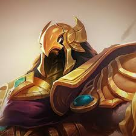

Champion Lore
Azir is a mage-empowered champion in League of Legends known for his powerful control over sand soldiers and his ability to summon turrets. He hails from Shurima, an ancient and mysterious empire, and seeks to restore his fallen civilization to its former glory.
Learn more about Azir's lore here.
Abilities
Azir's gameplay revolves around commanding his sand soldiers to attack enemies from a distance, making him a formidable force in team fights and sieges. His abilities include:
- Sand Soldiers
- Conquering Sands
- Arise!
- Shifting Sands

Learn more about Azir's abilities here.
Skins
Azir has several skins available in League of Legends, each with its own unique look and theme. Some of his skins include:
- Galactic Azir
- SKT T1 Azir
- Gravelord Azir

View all of Azir's skins here.